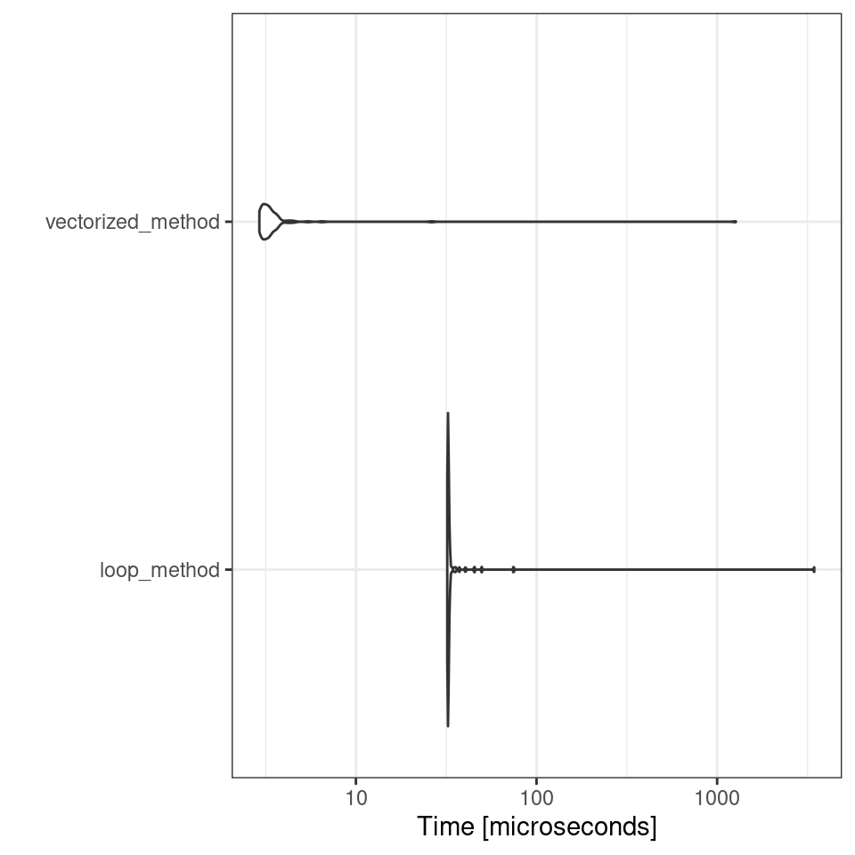
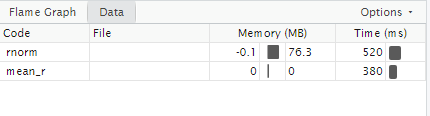
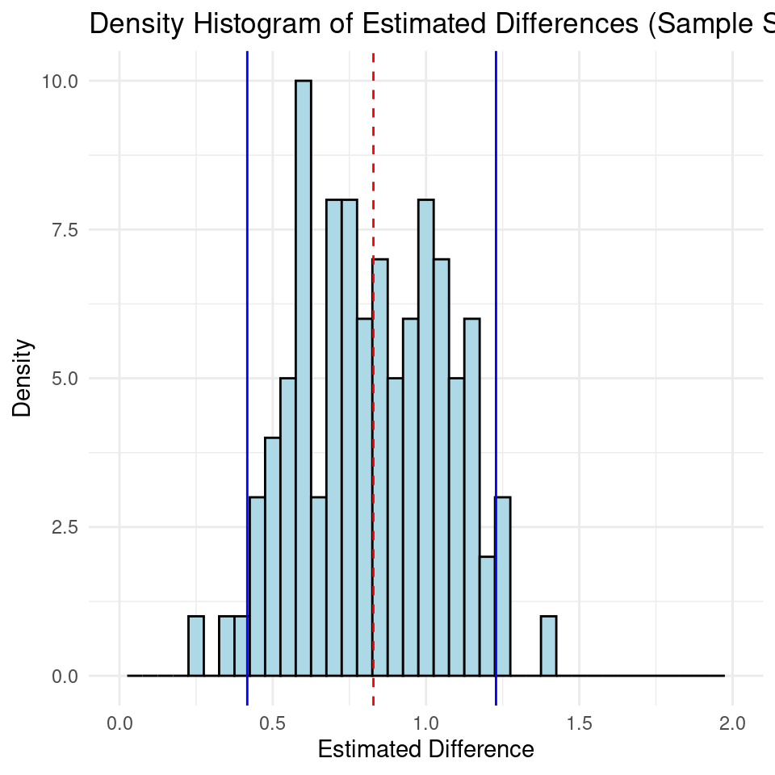

24 Efficient Programming
In this section we will cover some general concepts in R programming techniques around code optimisation.
When optimizing your R code for performance, it’s crucial to measure how long your code takes to run. Two commonly used methods for tracking and comparing the efficiency of your R scripts are the Sys.time function and the microbenchmark package.
Sys.time: This base R function is straightforward for measuring execution time. By capturing the system time before and after your code runs, you can calculate the elapsed time. While Sys.time is suitable for general timing, it might not provide the precision needed for very quick operations.
start_time <- Sys.time()
# Code to measure
end_time <- Sys.time()
elapsed_time <- end_time - start_time
print(elapsed_time)## Time difference of 0.0007762909 secsmicrobenchmark: For more precise timing, particularly when comparing very fast operations, the microbenchmark package is highly effective. It provides detailed performance metrics by running your code multiple times and reporting the best, worst, and median execution times. This package is ideal for fine-tuning and optimizing code where performance differences are subtle but significant.
Note in order for microbenchmark to work we must turn out our iterations into a function, microbenchmark() will then run our function a specified number of times and calculate metrics.
library(microbenchmark)
# Define two methods for calculating the sum of squares
# Method 1: Using a loop
sum_squares_loop <- function(x) {
total <- 0
for (i in 1:length(x)) {
total <- total + x[i]^2
}
return(total)
}
# Method 2: Using vectorized operations
sum_squares_vectorized <- function(x) {
return(sum(x^2))
}
# Create a sample vector
sample_vector <- rnorm(1000)
# Benchmark the two methods
benchmark_results <- microbenchmark(
loop_method = sum_squares_loop(sample_vector),
vectorized_method = sum_squares_vectorized(sample_vector),
times = 100
)
# Print the benchmark results
print(benchmark_results)
autoplot(benchmark_results)
## Unit: microseconds
## expr min lq mean median uq max neval
## loop_method 32.05 32.28 67.5516 32.390 32.730 3448.66 100
## vectorized_method 2.92 3.05 16.2309 3.265 3.455 1268.67 10024.1 Avoid Growing Vectors
In R, when you repeatedly add elements to a vector inside a loop, R has to resize and copy the vector each time, which can slow down your code. To avoid this, you should pre-allocate the vector with the required size before filling it.
Example: Suppose you want to calculate the average height of plants in different plots from multiple experiments.
24.1.1 Growing vectors
# Number of experiments
n <- 1000
# Initialize an empty vector
average_heights <- numeric() # This starts as an empty vector
for (i in 1:n) {
# Simulate heights of plants in one experiment
heights <- rnorm(100, mean = 50, sd = 10)
# Append the average height to the vector
average_heights[i] <- mean(heights) # This operation grows the vector
}24.1.2 Pre-allocated vectors
# Number of experiments
n <- 1000
# Preallocate the vector with the correct size
pre_allocated_average_heights <- numeric(n) # This creates a vector of size n
for (i in 1:n) {
# Simulate heights of plants in one experiment
heights <- rnorm(100, mean = 50, sd = 10)
# Store the average height in the preallocated vector
average_heights[i] <- mean(heights) # This operation fills the vector
}24.2 Vectors over loops
Many R functions are vectorised, that is the function’s inputs and/or outputs naturally work with vectors, reducing the number of function calls required. Ultimately calling an R function always ends up calling some underlying C/Fortran code. A golden rule in R programming is to access the underlying C/Fortran routines as quickly as possible; the fewer functions calls required to achieve this, the better
Here we take a loop-based calculation of summary statistics (e.g., means or variances) and then use vectorized functions and compare performance. The same basic looping is occurring in both instances - the difference is that when using vectors the loops run in C/Fortran which is faster.
# Inefficient Code
n <- 1000
means_loop <- numeric(n)
start_time <- Sys.time()
for (i in 1:n) {
means_loop[i] <- mean(rnorm(100))
}
overall_mean_loop <- mean(means_loop)
end_time <- Sys.time()
time_loop <- end_time - start_time
print(time_loop)
# Efficient Code (Vectorized)
start_time <- Sys.time()
means_vectorized <- replicate(n, mean(rnorm(100)))
overall_mean_vectorized <- mean(means_vectorized)
end_time <- Sys.time()
time_vectorized <- end_time - start_time
print(time_vectorized)## Time difference of 0.01402783 secs
## Time difference of 0.01262379 secs24.3 Avoid Global variables
Avoiding global variables is a good practice for writing clean and efficient R code. Instead, you should define variables within functions and pass them as arguments when needed. This approach reduces side effects and makes your code easier to maintain and debug - everything you need to understand about what the function does is contained within the function, whereas if it uses global variables, you need to worry about whether anything you call might change those variables, and alter behaviour in hard to reason about ways:
It can also improve speed as R does not need to search through the global environment to find them. But performance differences are likely to be extremely small.
library(microbenchmark)
# Global variable
x_global <- 1:1e6
# Function that uses the global variable
compute_sum_global <- function() {
result <- sum(x_global)
return(result)
}
# Benchmark
benchmark_global <- microbenchmark(
compute_sum_global(),
times = 100
)
print(benchmark_global)## Unit: nanoseconds
## expr min lq mean median uq max neval
## compute_sum_global() 369 389 21089.41 391 400 2057849 100
# Function that takes x as an argument
compute_sum_local <- function() {
# Local variable
x_local <- 1:1e6
result <- sum(x_local)
return(result)
}
# Benchmark
benchmark_local <- microbenchmark(
compute_sum_local(),
times = 100
)
print(benchmark_local)
benchmark_comparison <- microbenchmark(
compute_sum_global(),
compute_sum_local(),
times = 100
)## Unit: nanoseconds
## expr min lq mean median uq max neval
## compute_sum_local() 460 480 22068.31 480 500 2146940 100While the performance difference might be marginal for simple tasks, avoiding global variables and using function arguments is a good practice for optimizing code performance, improving readability, and enhancing maintainability. For larger or more complex applications, the benefits of local variable access can become more pronounced, especially in performance-critical sections of code.
24.4 Compile
The compiler package is a way of compiling code to get performance enhancements. R is a high-level programming language, computers don't understand R directly, they require translation. compiler takes our R code and compiles it into byte code, and may produce efficiencies along the way.
By default, code and functions from packages in R are compiled.
library(compiler)First create an inefficient function for calculating the mean. This function takes in a vector, calculates the length and then updates the m variable.
This is clearly a bad function and we should just use the mean() function, but it’s a useful comparison. Compiling the function is straightforward
cmp_mean_r <- compiler::cmpfun(mean_r)Then we use the microbenchmark() function to compare the three variants
24.4.1 Generate some data
x <- rnorm(1000)
microbenchmark(times = 10, unit = "ms", # milliseconds
mean_r(x), cmp_mean_r(x), mean(x))Unit: milliseconds
expr min lq mean median uq max neval
mean_r(x) 0.03448 0.03472 0.03619203 0.034840 0.0351495 0.132060 1000
cmp_mean_r(x) 0.03444 0.03473 0.02613626 0.034851 0.0351550 0.086510 1000
mean(x) 0.00604 0.00629 0.00689453 0.006435 0.0067100 0.053351 1000The compiled function is faster than the uncompiled function. Of course the native mean() function is faster, but compiling does make a significant difference
24.5 Profile code
profvis is a powerful tool in R for visualizing function profiling data. It helps you understand where your R code might be running slowly by providing a clear, interactive visualization of how time is spent in your functions
To profile the code, wrap it in profvis() and run it. Here’s how you can profile mean_r:

After running the profvis() function, a new viewer pane will appear in RStudio (or your default web browser if not using RStudio). Here’s how to interpret the visual output:
Timeline View: Shows how much time was spent in each function call over time. It visualizes which functions were called and how much time they took.
Flame Graph: Represents a stacked view of function calls, showing where most of the time was spent. The longer the bar, the more time was spent in that function and its calls.
Data Table: Provides detailed information about the time spent in each function call, including memory usage and function names.
Use the visualizations to identify bottlenecks. Look for functions with long execution times or those that are called frequently. Focus on optimizing these parts of your code.
24.5.1 Practice:
In this example we are going to simulate some data for two groups - group 1 has a mean of 0 and an sd of 1, group 2 has a mean of whatever value we supply to effect_size and a sd of 1.
By default this simulation is set to repeat an experiment where 30 samples are taken from each population and compared for a true difference. The experiment is repeated 100 times.
The purpose of this simulation is to understand how the estimated difference in means varies across different random samples of data when the true effect size is known. It helps to assess the sampling variability and provides insights into the precision of the estimated difference. Additionally, it can be used to create a confidence interval to assess the uncertainty around the estimated effect. And determine the power of our experiments.
With this example we know the true difference, see what happens to our confidence intervals as we change the sample size, effect size and iterations:
library(ggplot2)
# Define a function to run the simulation for a given sample size and effect size
simulate_difference <- function(sample_size, effect_size) {
set.seed(123)
# Initialize a data frame to store the estimated differences
results <- data.frame(Simulated_Difference = numeric(100))
for (i in 1:100) { # Perform 100 simulations for the fixed sample size
# Generate data for two groups with a specified effect size
group1 <- rnorm(sample_size, mean = 0, sd = 1)
group2 <- rnorm(sample_size, mean = effect_size, sd = 1)
# Create a data frame for the two groups
data_df <- data.frame(Group = rep(c("Group1", "Group2"), each = sample_size),
Value = c(group1, group2))
# Fit a linear model to estimate the difference in means
lm_model <- lm(Value ~ Group, data = data_df)
# Extract the estimated difference from the model
estimated_difference <- coef(lm_model)[2]
results$Simulated_Difference[i] <- estimated_difference
}
# Return the data frame of estimated differences
return(results)
}
# Fixed sample size of 20
sample_size <- 30
# Set the effect size
effect_size <- .8 # Adjust as needed
# Run the simulation for the fixed sample size
simulation_results <- simulate_difference(sample_size, effect_size)
# Calculate the mean and 2.5th and 97.5th percentiles for the confidence interval
mean_difference <- mean(simulation_results$Simulated_Difference)
lower_percentile <- quantile(simulation_results$Simulated_Difference, 0.025)
upper_percentile <- quantile(simulation_results$Simulated_Difference, 0.975)
# Create a density histogram of the estimated differences with lines for percentiles
ggplot(simulation_results, aes(x = Simulated_Difference)) +
geom_histogram(binwidth = 0.05, fill = "lightblue", color = "black") +
geom_vline(aes(xintercept = mean_difference), color = "red", linetype = "dashed") +
geom_vline(aes(xintercept = lower_percentile), color = "blue") +
geom_vline(aes(xintercept = upper_percentile), color = "blue") +
labs(x = "Estimated Difference", y = "Density") +
ggtitle(paste("Density Histogram of Estimated Differences (Sample Size = 20)")) +
scale_x_continuous(limits = c(0, 2), breaks = c(0,0.5,1,1.5,2))+
theme_minimal()
24.6 Caching
A straightforward method for speeding up code is to calculate objects once and reuse the value when necessary. This could mean making sure a calculation is performed only once per function:
# Calculate mean and variance:
calculate_stats_naive <- function(x) {
mean_value <- mean(x) # First calculation of the mean
variance_value <- mean((x - mean(x))^2) # Second calculation of the mean inside the variance calculation
return(list(mean = mean_value, variance = variance_value))
}
# Example usage
x <- c(1, 2, 3, 4, 5)
calculate_stats_naive(x)## $mean
## [1] 3
##
## $variance
## [1] 2How could we make the function above more efficient?
Another method of optimising functions is to store their outputs and check whether we can simply retrieve an output than have to recalculate it.
For our example, we'll compute the mean flipper length for each species of palmer penguin. Instead of recalculating these values multiple times, we'll include a check before running the function:
# Initialize a vector
mean_flipper_length <- NULL
compute_mean_flipper_length <- function(data, group, variable) {
# Check if the object already exists
if (!is.null(mean_flipper_length)) {
message("Fetching result from enviroment.")
return(mean_flipper_length)
}
# Perform the computation
result <- data |>
group_by({{group}}) |>
summarise(mean = mean({{variable}}, na.rm = TRUE))
# Store the result in the global environment using <<-
mean_flipper_length <<- result
return(result)
}
compute_mean_flipper_length(penguins, species, flipper_length_mm)
compute_mean_flipper_length(penguins, species, flipper_length_mm)| species | mean |
|---|---|
| Adelie | 189.9536 |
| Chinstrap | 195.8235 |
| Gentoo | 217.1870 |
| species | mean |
|---|---|
| Adelie | 189.9536 |
| Chinstrap | 195.8235 |
| Gentoo | 217.1870 |
This method works but is simplistic, it stores the output in our Global Environment, and although it can be easily accessed, it can also be inadvertently altered - an alternative method is to set up a unique environment to store the outputs of our function:
# Initialize a cache
cache_env <- new.env(parent = emptyenv())
compute_mean_flipper_length <- function(data, group, variable) {
# Check if the result is already in the cache
if (!is.null(cache_env[["mean_flipper_length"]])) {
message("Fetching result from cache.")
return(cache_env[["mean_flipper_length"]])
}
# Perform the computation
result <- data |>
group_by({{group}}) |>
summarise(mean = mean({{variable}}, na.rm = TRUE))
# Store the result in the cache
cache_env[["mean_flipper_length"]] <- result
return(result)
}We'll call the compute_mean_flipper_length function and see how caching affects performance.
# First call: Compute and cache the result
compute_mean_flipper_length(penguins, species, flipper_length_mm)
# Second call: Fetch the result from the cache
compute_mean_flipper_length(penguins, species, flipper_length_mm)| species | mean |
|---|---|
| Adelie | 189.9536 |
| Chinstrap | 195.8235 |
| Gentoo | 217.1870 |
| species | mean |
|---|---|
| Adelie | 189.9536 |
| Chinstrap | 195.8235 |
| Gentoo | 217.1870 |
Cache Environment: Ideal for managing multiple cached results and separating cache management from computation logic. Useful in more complex or dynamic scenarios.
Simple Object: Best for straightforward cases where only a single result needs to be cached, with less complexity and overhead.
In general, using a cache environment is more scalable and versatile, especially when dealing with more complex or dynamic caching needs.
Question. Will the function recognise if a new data source is used for the function input?
Try running our functions on the mtcars dataset - try the functions with and without the hash data safety check. What happens?
24.7 Saving to disk
When working with R, efficient data management and storage are essential for maintaining a smooth workflow, especially in large-scale data analysis projects. By default, when we cache we are caching data to memory. But what if we want the outputs of intensive processes to be stored across R sessions, then we need to consider saving to disk
R provides two powerful binary file formats, .Rdata and .RDS, that facilitate the easy saving and loading of data. These formats are designed to handle R objects, data frames, functions, and more, while preserving data types and structures.
Understanding when and how to use these formats can enhance your data analysis by improving speed, efficiency, and flexibility. In this explainer, we'll explore the differences between .Rdata and .RDS files, provide practical examples for their usage, and discuss scenarios where each format may be most beneficial, particularly in optimizing workflows involving computationally intensive tasks.
24.7.1 R data files
R has binary file formats for easy saving and loading of data, .Rdata and RDS:
.Rdata file is a binary file format in R used to save the entire workspace, which includes objects, functions, data frames, and more. It captures the current R session's state, allowing you to save and load the entire workspace, including all objects, in a single file.
# Create some sample data
my_data <- data.frame(
ID = 1:3,
Name = c("Alice", "Bob", "Charlie"),
Score = c(95, 87, 92)
)
# Save the entire workspace to an .Rdata file
save.image(file = "my_workspace.Rdata")
# Clear the current workspace
rm(list = ls())
# Load the entire workspace from the .Rdata file
load("my_workspace.Rdata")
# Access the loaded data
print(my_data).RDS file, or R Data Serialization file, is a binary file format in R used to save individual R objects. Unlike .Rdata, it is not meant to save the entire workspace but specific objects or data structures.
# Create some sample data
my_data <- data.frame(
ID = 1:3,
Name = c("Alice", "Bob", "Charlie"),
Score = c(95, 87, 92)
)
# Save the data frame to an .RDS file
saveRDS(my_data, file = "my_data.RDS")
# Clear the current workspace
rm(list = ls())
# Load the data frame from the .RDS file
loaded_data <- readRDS("my_data.RDS")
# Access the loaded data
print(loaded_data)Using these file formats can have several advantages:
Preservation of Data Types and Structure: .RDS files preserve the original data types and structure of R objects, including lists, data frames, functions and more.
Efficiency and Speed: Reading and writing data in the .RDS format is more efficient and faster than working with text-based formats like CSV.
Control Over Specific Objects: .RDS files allow you to save and load specific R objects or datasets, providing control and flexibility.
24.7.2 Objects that take a long time
If there are parts of your analysis that are time-consuming to execute, it's an indication that it's a suitable time to adopt a modular approach. This approach involves dividing your analysis into distinct phases, with each phase having its dedicated script and resulting outputs.
You can address this by isolating computationally intensive steps in separate scripts and saving the critical object to a file using saveRDS. Subsequently, you can create scripts for downstream tasks that reload the essential object with readRDS. Breaking down your analysis into logical steps with clear inputs and outputs is generally a sound practice.
Question Can you edit the fibonacci_naive function to check for an RDS file on disk and only run if this is not found?